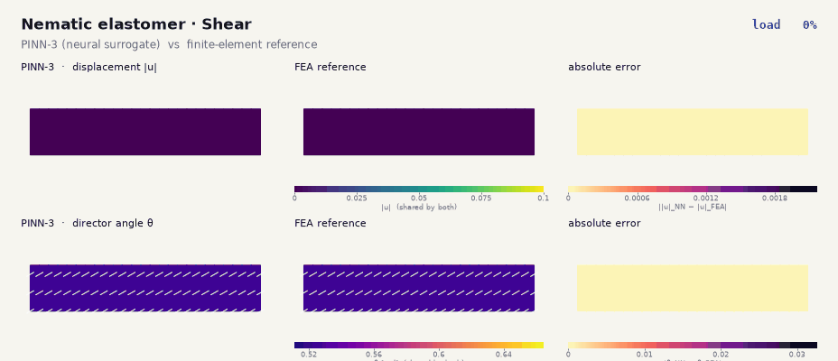
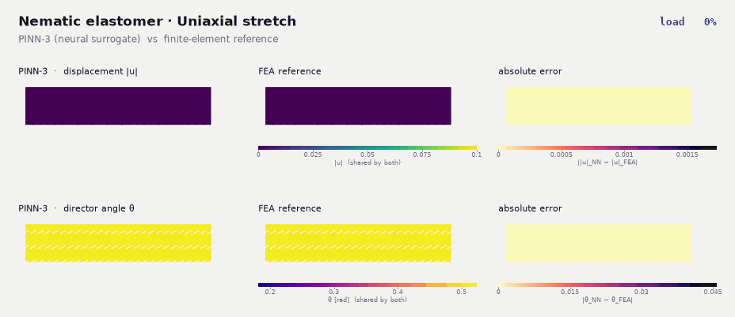
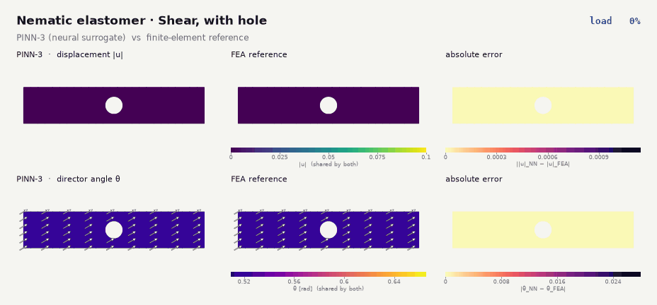
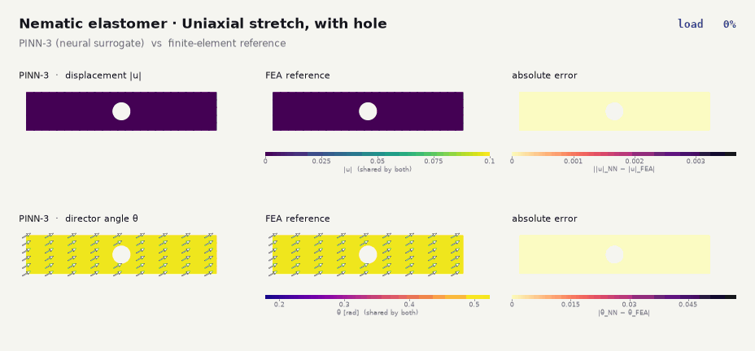
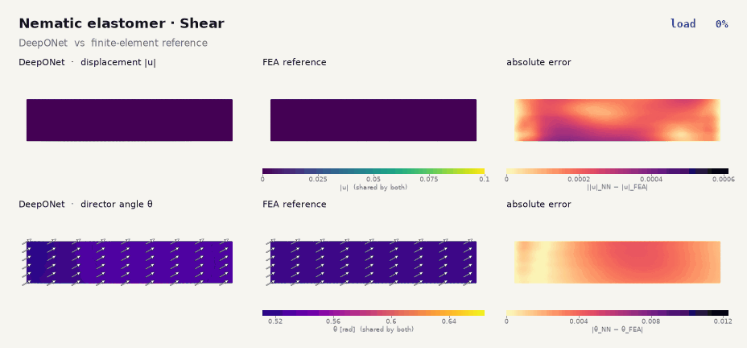
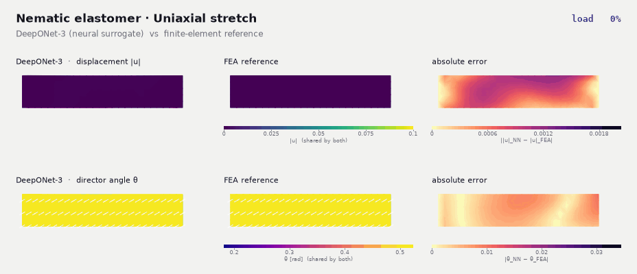
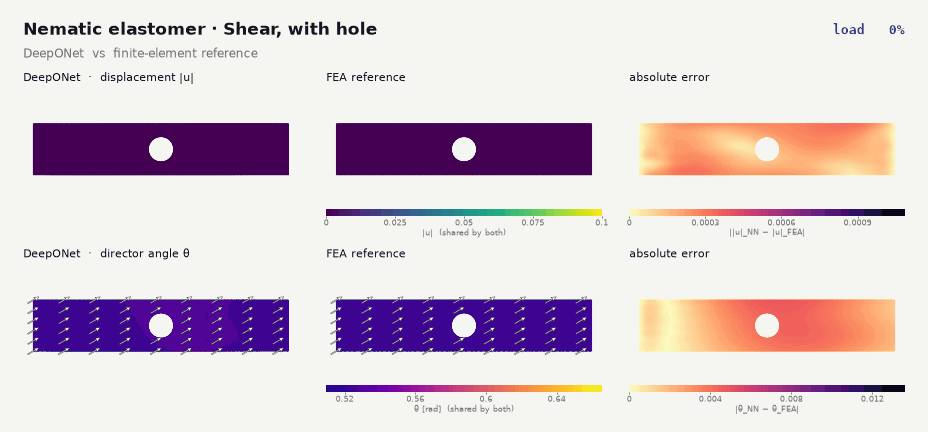
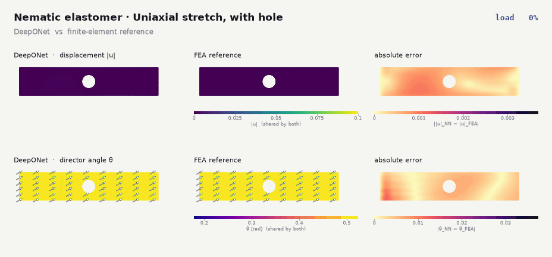

Soft Matter · Physical AI
Nematic
elastomers.
Neural surrogates for liquid crystal elastomers, whose deformation is coupled to an orientation (director) field. Here, two neural approaches are checked against finite-element reference solutions.
Nematic elastomers are rubber-like networks coupled to an orientational order, so the deformation and the director field must be found together. I am studying how well physics-informed neural networks and operator-learning (DeepONet) models can reproduce this coupled response, using finite-element solutions as the yardstick. Full details will be released with the accompanying papers.
Physics-informed neural network
Each animation shows the load ramp for a thin strip, with the neural prediction, the finite-element reference and the pointwise error side by side: displacement magnitude on top, director angle below.




DeepONet
The same four problems for the operator-learning model.




Animations are interpolated between the stored load steps for smooth playback. The reference in every panel is a finite-element solution of the same discretized problem. Work in progress; details forthcoming.